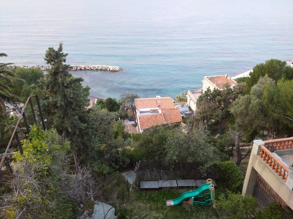

Meilleurs voeux pour 2021!

(Marseille, December 2021)
- French Dance, Laura Cannell and Kate Ellis, WINTER RITUALS
- Of The Ferns, Flora Yin-Wong, Holy Palm
- Katie Cruel, Karen Dalton, 1966
- Visit Croatia, Alabaster Deplume, To Cy & Lee: Instrumentals Vol. 1
- In a Small Valley, Ana Roxanne, ~~~
- Bonsai Terrace, Pauline Anna Strom, Trans-Millenia Music
- The Mad Lover Suite: Ground. Aire V, Thomas Dunford, The Mad Lover
- Bach's Memento: No. 2, Miserere mei Domine, Joby Bell, American Classic Widor, Vol. 4
- Trembling With Tenderness, Abul Mogard, In Death's Dream Kingdom
- Daily, Clarice Jensen, The experience of repetition as death
- For Turiya, Charlie Haden and Alice Coltrane, Closeness Duets
- Nothing Left to Hear but the Night, David Grubbs and Taku Unami, Comet Meta
- Gossamer Silk, Pauline Anna Strom, Trans-Millenia Music
- The Pelican, Sarah Davachi, Cantus, Descant
- In Solitude I Will Fade Away, Alison Cotton, Only Darkness Now
- Thirty Tulips, Mary Lattimore, Silver Ladders
- Louva-A-Deus "Mantis", Fabiano do Nascimento, Tempo Dos Mestres
- The Windmills of Your Mind, Dorothy Ashby, Dorothy's Harp
- Passing Bell, Sarah Davachi, Cantus, Descant
- - - -, Ana Roxanne, Because of a Flower
- Grasshopper, Ytamo, Vacant
- Piano String, Leila, Like Weather (Remastered Edition)